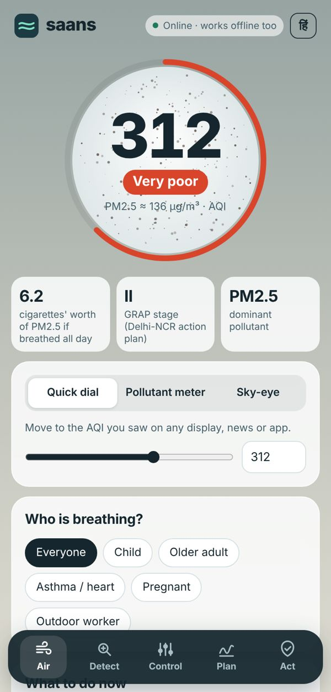
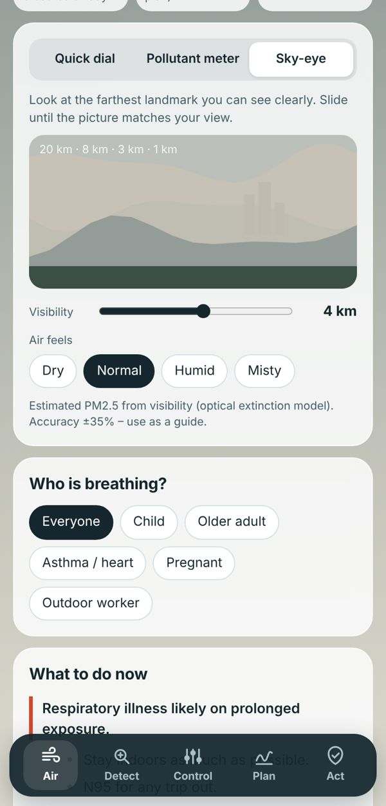
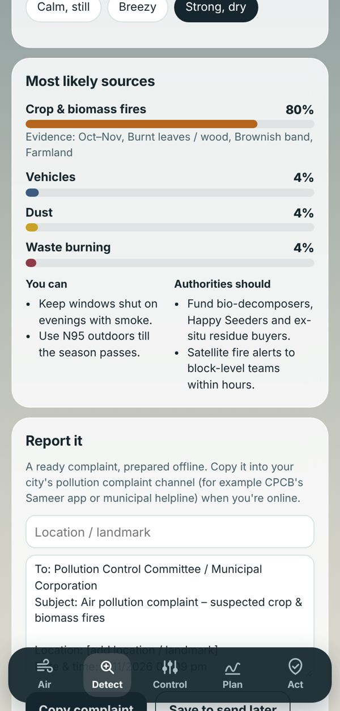
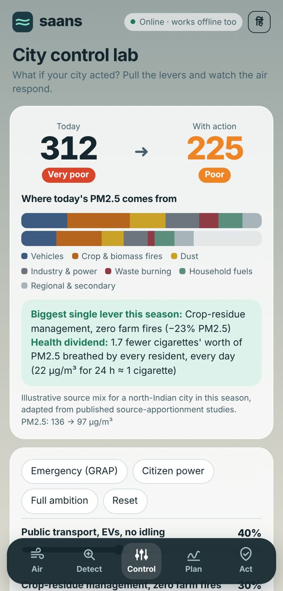
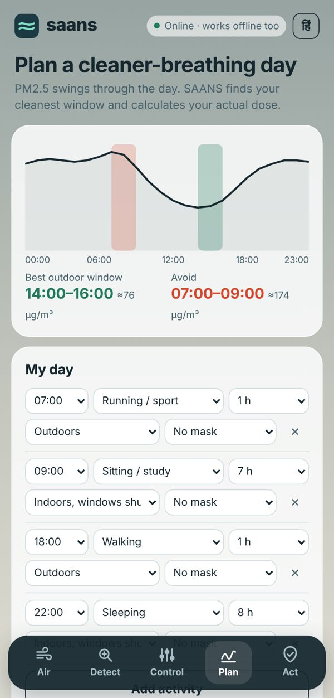
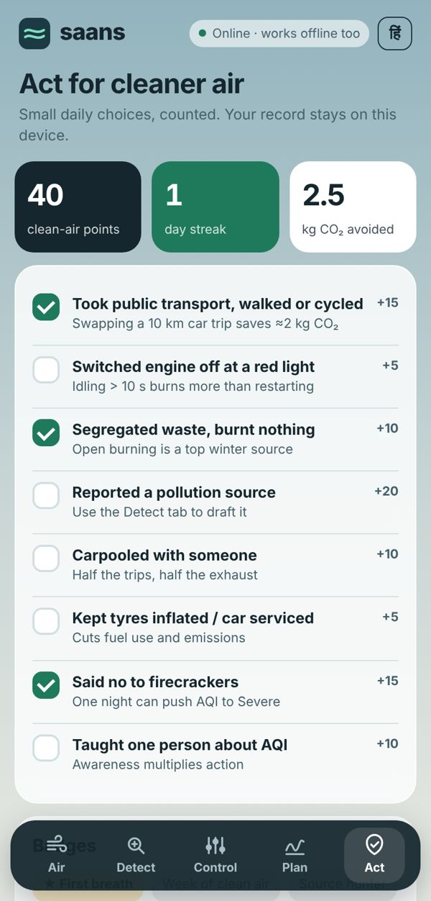

Every breath, decoded. Even offline.
SAANS (Hindi for breath) is a 74 KB air-pollution control app for India. It turns any reading, or simply what you can see, into the official AQI. It also finds the likely source and shows what you and your city can do about it.
This is the live app. Drag the AQI dial and watch this page's sky change.
deaths in India linked to air pollution in 2021
State of Global Air 2024children under five in India lost to polluted air in 2021
State of Global Air 2024NCAP cities still above the national PM10 standard in 2025-26
CREA, April 2026Six tools, one tiny app
Each tool answers a question people actually ask on a smoggy day, and every one of them works on airplane mode.

Your air, decoded
Enter an AQI you saw anywhere, or raw pollutant readings. SAANS computes the official CPCB National AQI and names the dominant pollutant. It then turns the number into what to do now.
- Seven pollutants: PM2.5, PM10, NO₂, O₃, CO, SO₂, NH₃
- Advice for children, older adults, people with asthma or heart disease, pregnant women and outdoor workers
- GRAP stage and a cigarettes-per-day equivalent

No monitor? Use your eyes.
Look at the farthest landmark you can see clearly and slide until the landscape matches. An optical model converts visibility and humidity into an estimated PM2.5, so it works in towns with no monitoring station.

Find the source. File the complaint.
Tell SAANS the season, time, smell, haze colour and what's nearby. It scores seven sources, from crop fires to waste burning, and shows the evidence behind each score. Then it drafts a complaint you can copy now or save to send later.

A city control lab in your pocket
Pull six policy levers (transport, crop residue, dust, industry, waste burning, clean cooking) and watch the AQI and source mix respond live. Here is a "Very poor" day in Oct–Nov:

Same day, much less smoke
PM2.5 swings through the day. SAANS marks the cleanest and worst hours, then calculates the PM2.5 you actually inhale across your activities, rooms and masks. It tells you which activity to move, and sizes a purifier for your room.

Small actions, counted
Daily clean-air pledges earn points, streaks and badges and add up the CO₂ you avoided. Flip-cards bust six common myths, from indoor plants to smog towers.
Smart without the cloud
Every number comes from published science and runs on the phone itself.
AQI engine
Piece-wise interpolation over CPCB National AQI breakpoints. The overall AQI is the highest sub-index.
Sky-eye
Koschmieder relation b = 3.912 / V, minus Rayleigh scattering, divided by mass-extinction efficiency × humidity growth. About ±35% accurate, and the app says so.
Source detective
Seasonal priors multiplied by evidence weights, normalised to probabilities. Every result lists the clues that drove it.
Control lab
Seasonal source-apportionment shares × lever adoption × lever efficiency give the new PM2.5, converted back to AQI.
Exposure planner
Dose = PM2.5 × hourly factor × room infiltration × breathing rate × (1 − mask efficiency) × hours, compared with a WHO-guideline day.
Health framing
22 µg/m³ of PM2.5 breathed for 24 hours ≈ 1 cigarette, so exposure is easy to grasp.
Built for every Indian phone
Smaller than a single photo. One self-contained file, with no libraries, fonts or network calls.
Offline-first
Works on airplane mode and on low-end phones. Once installed, it runs offline for good.
Private by design
No login, no tracking, no permissions. Your records and saved complaints never leave the device.
Bilingual and inclusive
Full English and हिंदी, large type, keyboard-accessible controls and reduced-motion support.
Air you can feel
The whole interface hazes as the AQI rises, and a particle "breath orb" thickens with PM2.5.
Who it serves
- Families: profile-specific protection every day
- Schools and colleges: AQI literacy, outdoor-time planning and policy role-play
- Pollution boards and municipalities: structured, time-stamped citizen reports with the suspected source
- Outdoor workers and the elderly: clear actions for the people most exposed
What's next
- Pair with low-cost Bluetooth PM sensors
- All 22 scheduled languages and voice guidance
- Satellite farm-fire alerts when online, cached for offline
- Ward dashboards for city NCAP cells
- Field validation against monitoring stations in 3 cities
Breathe smarter today.
Open SAANS, set today's air, and see what you and your city can do about it.